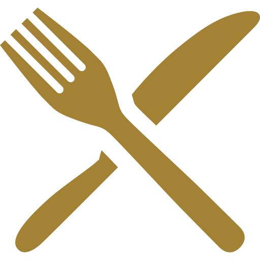

フランス料理と日本料理の融合
コロニアルスタイルが生み出す
国境を越えた美食の革命
Japanese × French
La Baie
Lunch
Dinner
Tel
11:30 ~ 14:00
17:30 ~ 21:00
078-262-6650
YOKOHAMA YAMATE
Concept

大航海時代以降、世界中に進出して行ったヨーロッパ人に
とって、アジアの日差しは非常に強く感じられるものでし
た。数々の3つ星レストランで修業を重ねたシェフが繰り
広げる料理のコンセプトは、食材の融合。すなわち美味し
い食材に 国境をつくらないこと。 日本とフランスの料理
を融合させた独自のコロニアルスタイルです。
Space
異国で心地よく過ごすために考え出された建築様式
がコロニアルスタイル。真っ白な建物にベランダを
廻らし、風通しが良くなるように工夫された住居は
、アジアとヨーロッパ人のスタイルが融合していま
す。都会に現れる、白い壁に大きなテラスをもった
建物、そして屋根には 日本瓦…明治41(1908)年に
建てられた歴史ある建物です。
ラベは、お客様おひとりおひとりを、大切に
お迎えしたいと考えています。それぞれの友
人の好みを忘れないように、 その方のセンス
やライフスタイルに合わせるように、ラベは
おもてなしをプランいたします。
Menu


Scece


ビジネスや接待で
重要なお客様をお招きする際に
ご利用いただきたいと思います。
家族のお祝い事
還暦・入学・就職などの様々な家族で
のお祝い事に利用いただきたいと思い
ます。
各種パーティーなど
貸切パーティーや展示会などでの
ご利用もしていただけます。
記念日に
結婚記念日初め様々な記念日ごとにご
利用いただきたいと思います。(オリジ
ナルプランも承ります)
Wedding
チャペル挙式+06名会食プラン 228,030円
チャペル挙式+10名会食プラン 248,030円
チャペル挙式+12名会食プラン 268,030円
チャペル挙式+20名会食プラン 288,030円
チャペル挙式+32名会食プラン 368,030円
STEP WEDDING
～ラベで新しい結婚式のかたち～
Blog


2019/04/13
横浜山手より。
2019/04/11
2011 ラベシェフ日記。No01
2019/04/07
春のメニュー。
Infomation
住所
横浜市山手鷹見町啓悟1-2-28
営業時間
ランチ(11:30~14:00)
ディナー(17:30~21:00)
定休日
月曜日(月曜祝日の場合火曜日)